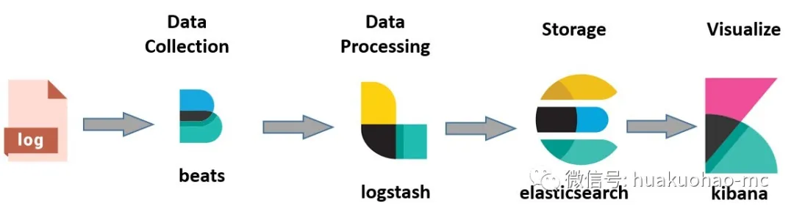
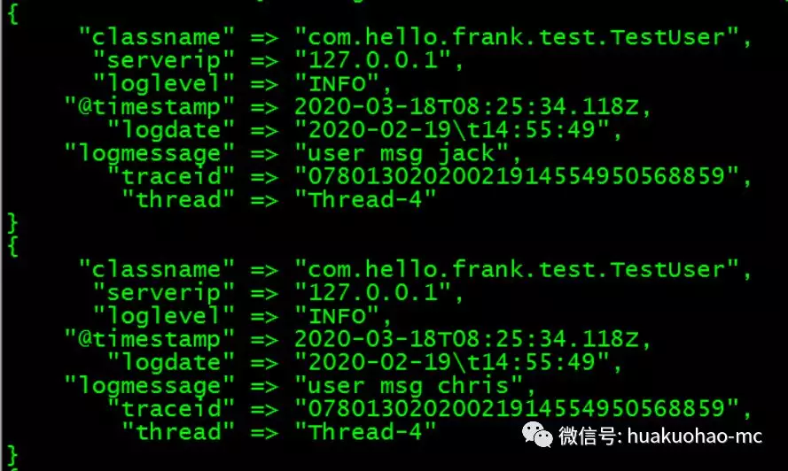
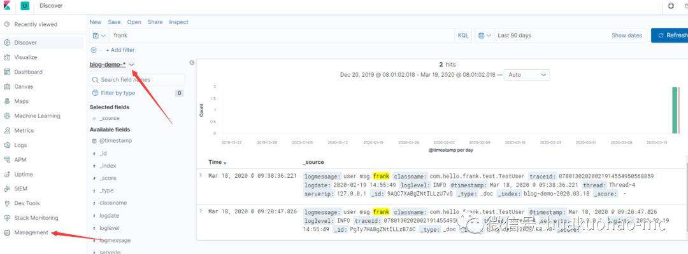

有些事情，当我们勇敢的迈出第一步的时候，其实就已经完成了50%。很显然，学习ELK就属于这样的事情。很多对ELK不了解的同学，每当想学习的时候，就会因为涉及的组件比较多，导致自己不知道如何开始，最后的结果就是永远没有开始，让自己一直处于临渊羡鱼的状态。
大部分程序员学一门新语言的时候都是从“hello world”开始的。其实ELK也有自己的“hello world”。只不过这个“hello world”需要的组件及配置有点儿多。
这边文章我会带着大家搭建一个实时的日志搜索平台。将业务系统产生的日志(模拟)，源源不断的收集到Elasticsearch 中，最后通过Kibana 进行查询展示。
如果这篇文章中出现的一些细节使你困惑，那么就暂时放过自己，争取先把这一切都跑通，毕竟你刚开始学Java 的时候，对”hello world”程序里面的每一行代码也不是真正的理解。
ELK是 Elasticsearch,Logstash,Kibana 三个组件的首字母缩写，这是原来的叫法，现在新的叫法是Elastic Stack，除了Elasticsearch、Kibana、Logstash还增加了Beats，主要用于数据收集。

一点点说明：
本文基于centos7.5 的操作系统，Elastic Stack基于最新的7.6版本。
本文只涉及单点的搭建及配置，至于集群的配置及调优不在本文讨论范围内。
本文假定的业务系统产生的日志格式如下：
|07801302020021914554950568859|127.0.0.1|2020-02-19 14:55:49[INFO][Thread-4][com.hello.frank.test.TestUser]-user msg jack
Elasticsearch
介绍
Elasticsearch 是一款提供分布式数据存储，搜索及分析的数据引擎。有很多的应用场景，但是使用最多的还是存储日志信息，用于日常运维及商业分析。
安装
1 | 下载 |
Elasticsearch 的配置文件是config/elasticsearch.yml。默认情况下，Elasticsearch 只允许本机访问，所以我们只需要简单的修改一下配置文件，将 network.host 前面的注释去掉，同时将值改成 0.0.0.0，表示所有机器都可以访问，然后重启一下就OK了。
启动后，可以通过curl http://hostIp:9200 进行测试，如果看到如下信息就证明Elasticsearch 安装完了。
1 | { |
注意：
Elasticsearch启动的时候，如果报错”max virtual memory areas vm.maxmapcount [65530] is too low”，需要执行$ sudo sysctl -w vm.max_map_count=262144，来修改最大虚拟内存数。
FileBeat
介绍
ELK平台提供了很多 Beat 组件，目的是为了收集各种不同的数据源，比如有针对日志文件的FileBeat，也有针对系统运行信息的MetricBeat，还有针对网络包的PacketBeat。
这里我拿FileBeat 的安装和使用来举例，演示一下如何收集应用的日志信息。
安装
1 | 下载 |
配置
使用 Filebeat 进行日志收集，只需要对配置文件进行简单的修改就OK。Filebeat 的配置文件是filebeat.yml。所有的配置都在这个文件下进行。
输入配置。1
2
3
4
5filebeat.inputs:
- type: log
enabled: true
paths:
- /var/log/*.log
上面这段简单的配置，表示收集/var/log下面的所有.log文件。同时还可以这样配置/var/log/*/*.log ，来抓取log子目录下的所有.log文件。注意不会抓取log目录下的.log文件。
输出配置
·Filebeat支持很多输出配置，最常用的就是输出到Kafka和logstash,当然了也可以直接输入到Elasticsearch。
输出到Elasticsearch 的配置1
2output.elasticsearch:
hosts: ["ES-host:9200"]
输出到Logstash的配置。
1 | output.logstash: |
Logstash可以对日志进行过滤和清洗，如果日志量太大，单节点的Logstash很可能满足不了需求。Filebeat支持同时输出到多个Logstash。
负载均衡配置
支持负载均衡的配置也很简单，配置如下。1
2
3output.logstash:
hosts: ["localhost:5044", "localhost:5045"]
loadbalance: true
相比单节点的配置，只是增加了一个loadbalance的属性，同时将新增的节点加到hosts数组里就OK了。
注意
loadbalance属性只对Redis,Logstash,和Elasticsearch起作用，Kafka自己就可以实现负载均衡，不用Filebeat来操心。
此外Filebeat还支持多个线程工作模式，默认的work 是1，如果想增加worker 数量，只许增加work 属性的配置就OK。
1 | filebeat.inputs: |
上面的配置表示一共有4(host * work)个worker在工作。
启动
通过 ./filebeat -e -c filebeat.yml -d "publish" 启动Filebeat。
如果上面已经成功启动ES，同时你的FileBeat的配置又是输出到Elasticsearch。启动之后，你的日志就会源源不断的存储到Elasticsearch。
Filebeat是通过FileBeat安装目录下的data目录进行日志文件信息管理的，如果在测试阶段，想重复收集相同的日志，需要每次把data目录下的信息清空然后在重新启动。
Logstash
介绍
Logstash是一款强大的数据处理工具，可以帮助我们处理从数据源发送过来的数据。同时将加工之后的信息发送到Elasticsearch。在ELK里面扮演者承上启下的作用。
安装
1 | 下载 |
配置
Logstash提供了input插件，用于读取各种数据源的数据。这里配置一个接收FileBeat发送过来的数据，然后将数据做简单之后发送到ES进行存储的配置。
先在Logstash 的config 目录下，创建一个配置文件，假设叫blog-pipeline.conf，文件中的内容是这个样子。
1 | input { |
配置很简单，分为输入和输出两个部分。输入部分的port端口号就是上面提到的Filebeat的端口号。output的配置部分表示输出到ES。
配置文件中注释的那一行，是方便大家调试用的，打开那一行，可以把输出打印到控制台，方便我们调试，以免调试阶段产生的数据污染ES中生产数据。
Elasticsearch中 index的概念可以简单的理解成关系数据库中表的概念。如果不配置index项，默认值是logstash。
启动
通过 ./bin/logstash -f ./config/blog-pipeline.conf 启动Logstash
如果一切都正常，你可以在启动Logstash 的控制台看到收集的日志了（记得调试的时候使用stdout { codec => rubydebug }）。
Grok filter
如果只是原样的将日志信息存入ES，那么就没有必要使用Logstash了。因为FileBeat 也可以很好的完成相关工作。如果想对日志信息做一些处理，那么Grok 的filter插件，就有必要了解一下。
grok是一款方便大家使用的正则表达式库，里面封装了很多常用的正则，当然了我们也可以自定义。具体预定义了哪些正则，我们可以去这里看（https://github.com/logstash-plugins/logstash-patterns-core/blob/master/patterns/grok-patterns），如果需要对grok进行调试，可以使用这个网址(https://grokdebug.herokuapp.com/),调试的网址需要翻强使用。
下面我们针对文章开头提到的日志样例，进行正则匹配。当然了这个过滤只是为了演示grok如何使用，并没有过滤掉日志中任何一部分信息，实际使用中可以提取感兴趣的日志信息进行入库。
Grok的插件使用很简单，只需要在Logstash的配置文件中增加如下信息就OK。
1 | filter { |
Logstash 的完整配置如下
1 | input { |
启动
再次启动Logstash。如果你使用的是stdout { codec => rubydebug }，那么屏幕上的输出如下。

Kibana
介绍
Kibana是一款开源的，用于数据分析展示的平台。经常跟ElasticSearch配合使用。简单的说就是为ElasticSearch提供前端的数据搜索及分析的展示界面，功能强大，各种图表样式丰富。
安装
1 | 下载 |
配置
Kibana 的配置文件是，config/kibana.yml。默认端口号是5601。启动Kibana 之前需要告诉Kibana 连接哪个ES。在配置文件中修改如下配置elasticsearch.hosts:["http://ES-host:9200"] 即可
现在你可以通过浏览器访问Kibana了，如果你想查询刚刚存入Elasticsearch 的日志信息，还需要在Kibana的页面做如下配置。
在Kibana的左侧边栏找到management，点击进去之后，找到kibana的索引管理，添加blog-demo索引(Logstash中配置的索引名称)。添加完成后就可以搜索了。下面我放一个截图，大家感受一下,重点关注地方都用箭头标出了。

结束
这仅仅是一篇抛砖引玉的文章，Elastic Stack里面的每个组件都大有乾坤，如果各位有精力，建议深入的研究，会有颇多收获。